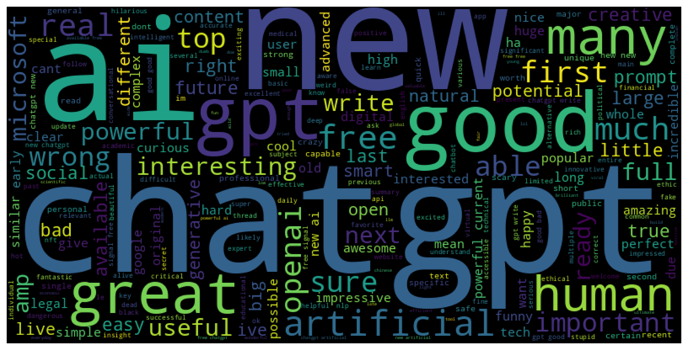
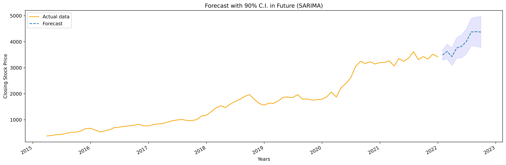
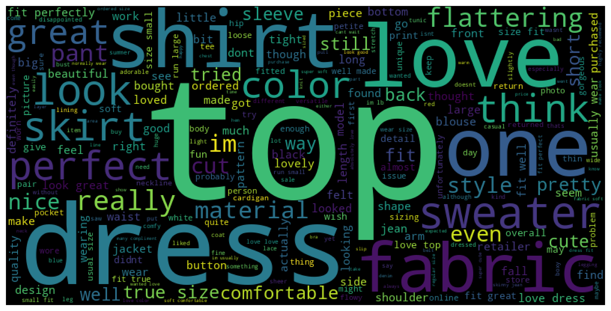

In this project, I analysed 13 years (several TBs) of time-series data and employed statistical techniques to detect Einstein's relativistic effect (Shapiro Delay) in a Neutron Star-White Dwarf star system.

In this project, I executed the sentiment analysis of tweets on CHAT GPT.
I cleaned and pre-process the tweets (using bag-of-words model) and determined the sentiment of each tweet using two different methods.
I created 4 different classification models [Logistical Regression,
Multinomial Naive Bayes, Support Vector Machine (SVM), and Random Forest]
and compared them to determine the best performing model.

In this project, I compared stock prices of FAANG companies with 7 years of data. I did a detailed time-series analysis of the stocks of AMAZON. I used ARIMA, SARIMA, and Prophet models and fit them with the time series. I found the forecast of the stock price of Amazon for 1 year in future.

In this project, I performed sentiment analysis of reviews by customers of an E-commerce women's clothing brand. After cleaning and pre-processing the reviews, I used two vectorisation approaches: bag-of-words and TF-IDF to do word vectorisation. I trained the reviews on 4 classification models to determine the best performing model.